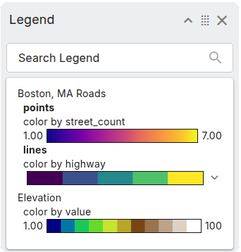
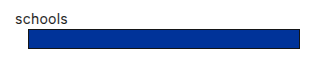
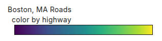
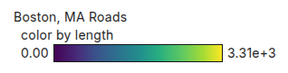
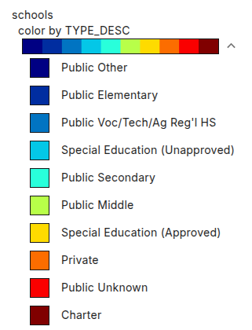
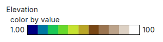
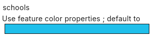
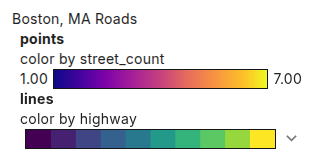

Introduction
The legend panel provides a visual overview of the current styles applied to your selected layers. This is a helpful panel to include in screenshots and bookmarks that you intend to send to others. The legend summary helps the viewer quickly understand what the layer styles convey about the data, without needing to inspect the style configuration menu for every layer.
The legend is a read-only summary; see the Selected Layers panel to make changes to your selected layers and their applied styles.

Legend Structure
The legend mirrors the current state of the configuration you specify in the Selected Layers panel. The legend contains a list of layer style summaries, matching the order of the layers list in the selected layers panel.
Each layer style summary is labelled with the layer name (and copy number if more than one instance exists). These labels match the labels in the selected layers panel, and they will appear in the same order.
Each layer style summary illustrates the color configuration of the layer’s current style. Size and filter configurations are not included in the legend. Color configurations vary in complexity, so there are several variations of how a layer style summary is depicted.
-
Single color applied to all features/bands

-
Continuous colormap applied all features/bands. A label displays the name of the color-by property. If the color-by property is numeric, the colormap range will be displayed on either side of the color scale.


-
Discrete colormap applied to all features/bands. A label displays the name of the color-by property. If applied to a categorical property, the color scale can be expanded to show the list of values that exist on the data and the color applied to each one.

If applied to a numeric property, the colormap range will be displayed on either side of the color scale.

-
(Vector only) Enable “Prioritize feature color properties” option. When this option is enabled in the color configuration, features with “fill” and “stroke” properties will be colored according to those property values. If some features lack those properties, they will be colored according to the rest of the color configuration, and the legend panel will display a label of “Use color properties; default to” above the color summary. If all the features in that layer have fill and/or stroke properties, the legend panel will only display the “Use color properties” label.

-
Multiple color configurations (different configurations for each feature type on vector data and for each band on raster data). For each color configuration, the name will be displayed in bold, followed by the color summary, which can appear as any of the above variations.
